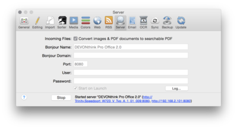

|
|
|
Server |
|
 DEVONthink Pro Office features a built-in web server that allows you to share documents on your local area network and over the Internet with just one click. As soon as the Web server starts, other users can use a standard Web browser to search your database, view documents, and download them. Enter all necessary details (see below) and click the Start button to start the Web server, which makes all documents in every shared database (You switch on sharing in the Database Properties panel.) available for searching. If you or others have problems accessing your DEVONthink Pro Office database with a Web browser, click the Log button to check the log for error messages and other information that could be helpful in solving the problem.
As soon as the server starts, DEVONthink Pro Office shows the name and two URLs for your database at the bottom of the window. Use either the Bonjour services list of the Safari Bookmarks view or enter the listed URLs into the address field of your Web browser to access your database. Use the numeric address if the Bonjour does not work for your network. To learn more about using web sharing, the iPhone web application, and how best to make your database available from the "outside" Internet, please read on here. Incoming Files If desired, check the option Convert images & PDF documents to searchable PDF to automatically convert all images and non-OCR'd PDF documents added from web sharing users to searchable PDFs. Bonjour Name Enter a distinct name for your computer here that identifies it on the local network using Bonjour. This name will be shown in the list of Bonjour services on other Macs on your network. Switch to the Bookmarks view in Safari or your preferred browser and select Bonjour in the sidebar. Bonjour Domain, Port These settings define the Bonjour domain and the TCP/IP port number it uses.
User, Password To protect your database with a user name and password, enter a user name and password here. Anyone wanting to search your database using a web browser would need to enter the correct user name and password to gain access to your documents. If you have set individual passwords for your databases, these are used instead. Start on Launch To automatically start DEVONthink Pro Office's web server as soon as you launch DEVONthink Pro Office, check this checkbox. |